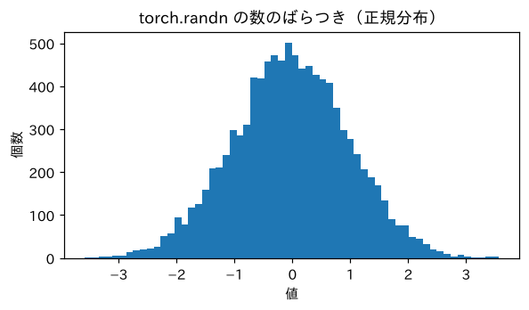
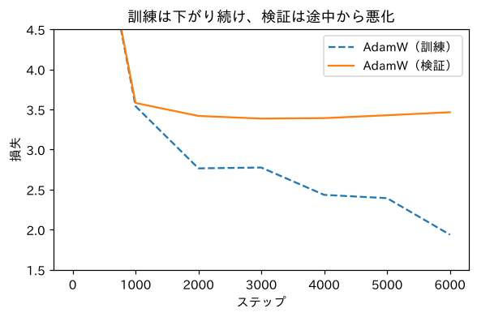
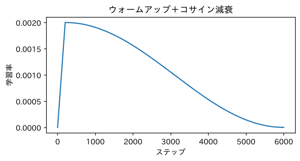
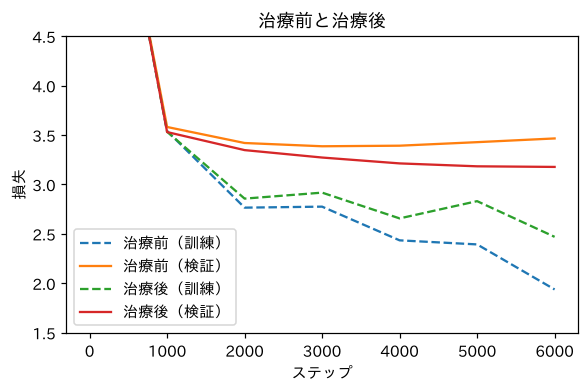

第2部 ゼロから作る · 第10章
学習のお医者さん：うまく学習させる技
初期化・正規化・Adam・ドロップアウト・学習率スケジュールを救急箱に
おすすめは「ページを読みながら、コードを自分のノートブックに1セルずつ貼って実行」。完成ノートは困ったときの答え合わせ用です。
つくるもの
過学習を抑え、安定して学習する改良版MLPと、学習の「診察表」。モデルをGoogleドライブに保存する方法も
ついでに身につく理論
- 平均・分散・標準偏差と正規分布
- 初期化：最初の損失は 付近が健康
- 活性化の大きさが層を通るたびに暴れる問題（勾配消失・爆発）
- LayerNorm（層正規化）
- Adam / AdamW（慣性と、パラメータごとの歩幅）
- 過学習とドロップアウト・重み減衰
- 学習率のウォームアップとコサイン減衰
- 勾配クリッピング
新しく使うPython
torch.randnと.mean().std()model.train()とmodel.eval()torch.save/torch.loadgoogle.colab.driveでドライブに保存

ミナト
「学習のお医者さん」って、なんだか大げさですね。

ボンゴ先生
いや、大げさじゃない。ニューラルネットワークの学習は、とても繊細な生き物だ。熱が出たり（損失が爆発）、寝込んだり（損失が下がらない）、物覚えが良すぎて応用がきかなくなったり（過学習）する。プロの研究者も、時間の大半を「診察」に使っている。今日はキミに聴診器を渡そう。
準備
準備セルは第9章とほぼ同じです。モデルには、この章で学ぶ部品（LayerNorm と Dropout）をあらかじめ入れてあります。説明は後で出てくるので、今は貼り付けて実行してください。
import re, math, urllib.request
import torch
import torch.nn as nn
import torch.nn.functional as F
def load_soseki(file_id="773_ruby_5968"):
url = ("https://raw.githubusercontent.com/aozorahack/aozorabunko_text/master/"
f"cards/000148/files/{file_id}/{file_id}.txt")
text = urllib.request.urlopen(url).read().decode("cp932")
text = text.split("-------------------------------------------------------")[2]
text = text.split("底本：")[0]
text = re.sub(r"《.*?》", "", text)
text = re.sub(r"※?［＃.*?］", "", text)
text = text.replace("｜", "").replace("\r\n", "\n")
text = re.sub(r"\n{3,}", "\n\n", text)
return text.strip()
text = load_soseki()
chars = sorted(set(text))
V = len(chars)
stoi = {ch: i for i, ch in enumerate(chars)}
itos = {i: ch for ch, i in stoi.items()}
data = torch.tensor([stoi[c] for c in text])
n = int(len(data) * 0.9)
train_data, val_data = data[:n], data[n:]
T = 8
class MLP(nn.Module):
def __init__(self, V, T, d=32, H=256, dropout=0.0):
super().__init__()
self.emb = nn.Embedding(V, d)
self.fc1 = nn.Linear(T * d, H)
self.ln = nn.LayerNorm(H) # この章で学ぶ「層正規化」
self.drop = nn.Dropout(dropout) # この章で学ぶ「ドロップアウト」
self.fc2 = nn.Linear(H, V)
def forward(self, x):
e = self.emb(x)
h = torch.tanh(self.ln(self.fc1(e.view(len(x), -1))))
return self.fc2(self.drop(h))
val_X = torch.stack([val_data[i:i + T] for i in range(len(val_data) - T)])
val_Y = val_data[T:]
@torch.no_grad()
def val_loss(model):
model.eval()
loss = F.cross_entropy(model(val_X), val_Y).item()
model.train()
return loss診察1：最初の損失を見る
学習を始める前に、まず 最初の損失 を見ます。何も学んでいないモデルは、全部の文字を同じくらいの確率で選ぶはずなので、損失は くらいになるはずでした（第8章）。
torch.manual_seed(0)
model = MLP(V, T)
x, y = val_X[:512], val_Y[:512]
print("理想の最初の損失 log V：", round(math.log(V), 3))
print("このモデルの最初の損失：", round(F.cross_entropy(model(x), y).item(), 3))
with torch.no_grad():
model.fc2.weight *= 30 # わざと出力層の重みを30倍にしてみる
print("重みを30倍にしたら：", round(F.cross_entropy(model(x), y).item(), 3))理想の最初の損失 log V： 7.631
このモデルの最初の損失： 7.7
重みを30倍にしたら： 37.845重みを大きくしたら、最初の損失が30以上に跳ね上がりました。何も知らないくせに、点数（ロジット）に大きな差をつけて「この文字に違いない！」と自信満々に間違えている状態です。こうなると、学習の最初の時間を「自信過剰を直す」ことだけに使ってしまいます。
統計の道具：平均・分散・標準偏差
初期化の話をもう少し深めるために、統計の道具を3つだけ用意します。
z = torch.randn(10000) # 「標準正規分布」から10000個の数を引く
print("平均：", round(z.mean().item(), 3))
print("分散：", round(z.var().item(), 3))
print("標準偏差：", round(z.std().item(), 3))平均： -0.03
分散： 1.001
標準偏差： 1.001!pip install -q matplotlib-fontjaimport matplotlib.pyplot as plt
import matplotlib_fontja
plt.figure(figsize=(6, 3))
plt.hist(z.numpy(), bins=60)
plt.title("torch.randn の数のばらつき（正規分布）")
plt.xlabel("値"); plt.ylabel("個数")
plt.show()
診察2：層を通るたびに暴れる数
ニューラルネットワークを深く（層をたくさん）すると、層を通るたびに数の大きさが変わっていきます。10層の全結合層＋tanhに、標準偏差1の数を流して、各層の出力の標準偏差を測ってみましょう。
def stack_stats(weight_scale, layers=10, width=256):
torch.manual_seed(0)
h = torch.randn(1000, width)
stds = []
for _ in range(layers):
W = torch.randn(width, width) * weight_scale
h = torch.tanh(h @ W)
stds.append(round(h.std().item(), 3))
return stds
print("重みの大きさ 1.0 ：", stack_stats(1.0))
print("重みの大きさ 0.01 ：", stack_stats(0.01))
print("重みの大きさ 1/√256：", stack_stats(1 / math.sqrt(256)))重みの大きさ 1.0 ： [0.975, 0.974, 0.974, 0.974, 0.974, 0.974, 0.974, 0.974, 0.974, 0.974]
重みの大きさ 0.01 ： [0.156, 0.025, 0.004, 0.001, 0.0, 0.0, 0.0, 0.0, 0.0, 0.0]
重みの大きさ 1/√256： [0.628, 0.486, 0.408, 0.359, 0.322, 0.293, 0.271, 0.253, 0.238, 0.226]治療1：LayerNorm（層正規化）
初期化に気をつけても、学習中にパラメータが変わると、また数の大きさは暴れ出します。そこで、毎回、強制的に大きさをそろえる部品を挟みます。それが LayerNorm（レイヤーノーム、層正規化）です。
h = torch.randn(2, 6) * 5 + 3 # 平均3、標準偏差5くらいの、暴れた数
mean = h.mean(dim=1, keepdim=True)
std = h.std(dim=1, keepdim=True, unbiased=False)
h_hand = (h - mean) / (std + 1e-5) # 平均を引いて、標準偏差で割る
ln = nn.LayerNorm(6, elementwise_affine=False)
print(h_hand)
print(ln(h))tensor([[-0.2989, 0.0184, -1.2615, 1.8086, 0.5781, -0.8448],
[-0.0293, 0.7320, 1.0004, -0.1376, -2.0512, 0.4857]])
tensor([[-0.2989, 0.0184, -1.2615, 1.8086, 0.5781, -0.8448],
[-0.0293, 0.7320, 1.0004, -0.1376, -2.0512, 0.4857]])治療2：Adam（賢い坂の下り方）
第7章からずっと、坂の下り方は「傾きに学習率を掛けて進む」SGDでした。現代のLLMの学習では、ほぼ必ず Adam（アダム）またはその改良版 AdamW を使います。
では、AdamWで学習させてみましょう。学習の様子を記録しながら、6000ステップ進めます。
def train(model, steps=6000, lr=1e-3, weight_decay=0.0, schedule=False, seed=0):
g = torch.Generator().manual_seed(seed)
opt = torch.optim.AdamW(model.parameters(), lr=lr, weight_decay=weight_decay)
history = []
for step in range(steps + 1):
if schedule: # 学習率スケジュール（後で説明）
for group in opt.param_groups:
group["lr"] = lr_at(step, lr, steps)
ix = torch.randint(0, len(train_data) - T, (256,), generator=g)
x = torch.stack([train_data[i:i + T] for i in ix])
y = train_data[ix + T]
loss = F.cross_entropy(model(x), y)
opt.zero_grad()
loss.backward()
torch.nn.utils.clip_grad_norm_(model.parameters(), 1.0) # 勾配クリッピング（後で説明）
opt.step()
if step % 1000 == 0:
history.append((step, loss.item(), val_loss(model)))
print(f"ステップ {step:4d}：訓練 {history[-1][1]:.3f} 検証 {history[-1][2]:.3f}")
return history
torch.manual_seed(0)
model_a = MLP(V, T)
hist_a = train(model_a, lr=1e-3)ステップ 0：訓練 7.678 検証 7.660
ステップ 1000：訓練 3.540 検証 3.581
ステップ 2000：訓練 2.765 検証 3.419
ステップ 3000：訓練 2.775 検証 3.386
ステップ 4000：訓練 2.434 検証 3.392
ステップ 5000：訓練 2.393 検証 3.428
ステップ 6000：訓練 1.937 検証 3.465速い！ SGDでは1万ステップかかった3.4台に、2000ステップで到達しました。でも、よく見てください。3000ステップを過ぎると、訓練損失は下がり続けているのに、検証損失は上がり始めています。
診察3：過学習
def plot_history(hists, labels, title):
plt.figure(figsize=(6, 3.5))
for h, label in zip(hists, labels):
s = [r[0] for r in h]
plt.plot(s, [r[1] for r in h], linestyle="--", label=label + "（訓練）")
plt.plot(s, [r[2] for r in h], label=label + "（検証）")
plt.ylim(1.5, 4.5)
plt.xlabel("ステップ"); plt.ylabel("損失")
plt.legend(); plt.title(title)
plt.show()
plot_history([hist_a], ["AdamW"], "訓練は下がり続け、検証は途中から悪化")
治療3：ドロップアウトと重み減衰
治療4：学習率スケジュール
最後に、学習率を学習の途中で変える技です。
def lr_at(step, max_lr, total, warmup=200):
if step < warmup:
return max_lr * step / warmup # ウォームアップ：0から徐々に上げる
progress = (step - warmup) / (total - warmup)
return max_lr * 0.5 * (1 + math.cos(math.pi * progress)) # コサイン減衰：なめらかに0へ
steps = list(range(6001))
plt.figure(figsize=(6, 2.8))
plt.plot(steps, [lr_at(s, 2e-3, 6000) for s in steps])
plt.xlabel("ステップ"); plt.ylabel("学習率")
plt.title("ウォームアップ＋コサイン減衰")
plt.show()
全部の治療を施す
ドロップアウト30%、重み減衰0.1、学習率スケジュール、勾配クリッピング。全部入りで学習させてみましょう。
torch.manual_seed(0)
model_b = MLP(V, T, dropout=0.3)
hist_b = train(model_b, lr=2e-3, weight_decay=0.1, schedule=True)ステップ 0：訓練 7.706 検証 7.703
ステップ 1000：訓練 3.533 検証 3.530
ステップ 2000：訓練 2.856 検証 3.347
ステップ 3000：訓練 2.917 検証 3.272
ステップ 4000：訓練 2.656 検証 3.213
ステップ 5000：訓練 2.831 検証 3.183
ステップ 6000：訓練 2.469 検証 3.177plot_history([hist_a, hist_b], ["治療前", "治療後"], "治療前と治療後")
検証損失が最後まで下がり続け、3.177 に到達しました。訓練損失と検証損失の差も小さくなっています。治療成功です。
| モデル | 章 | 検証データの損失 |
|---|---|---|
| でたらめ | 5 | 7.631 |
| bigram（数える） | 5 | 3.581 |
| ニューラルbigram | 8 | 3.685 |
| MLP（SGD） | 9 | 3.395 |
| MLP（LayerNorm＋AdamW＋ドロップアウト＋スケジュール） | 10 | 3.177 |
学習したモデルを保存する
2分かけて学習したモデルも、Colabの接続が切れたら消えてしまいます。Googleドライブに保存しておきましょう。
from google.colab import drive
drive.mount("/content/drive")実行すると、Googleアカウントへのアクセスを許可するか聞かれます。自分のアカウントを選んで許可してください。すると /content/drive/MyDrive が、あなたのGoogleドライブの中身になります。
import os
save_dir = "/content/drive/MyDrive/tsukuru-llm"
os.makedirs(save_dir, exist_ok=True)
torch.save(model_b.state_dict(), f"{save_dir}/mlp_kokoro.pt")
print("保存しました：", os.listdir(save_dir))保存しました： ['mlp_kokoro.pt']読み込むときは、同じ設計図でモデルを作ってから、保存した中身を流し込みます。
loaded = MLP(V, T, dropout=0.3)
loaded.load_state_dict(torch.load(f"{save_dir}/mlp_kokoro.pt"))
print("読み込んだモデルの検証損失：", round(val_loss(loaded), 3))読み込んだモデルの検証損失： 3.177学習の診察表
この章のまとめとして、症状と治療法の表を作っておきます。学習がうまくいかないときは、上から順に確認しましょう。
| 症状 | 考えられる原因 | 治療法 |
|---|---|---|
| 最初の損失が よりずっと大きい | 初期化が大きすぎる | 出力層の重みを小さく。デフォルトの初期化を使う |
| 損失がまったく下がらない | 学習率が小さすぎる／バグ（zero_grad 忘れ、requires_grad 忘れ） |
学習率を10倍に。コードを見直す |
損失が nan になる、急に跳ね上がる |
学習率が大きすぎる／勾配爆発 | 学習率を下げる。勾配クリッピング。ウォームアップ |
| 損失がガタガタで下がりにくい | バッチが小さい／学習率が大きい | バッチを大きく。学習率スケジュール |
| 訓練だけ下がって、検証が上がる | 過学習 | データを増やす。ドロップアウト。重み減衰。早めに止める |
| 訓練も検証も高いまま横ばい | モデルが小さすぎる（表現力不足） | 層や幅を増やす。窓（文脈）を広げる |
クイズ 1：過学習の見分け方
学習中、訓練損失は2.0まで下がりましたが、検証損失は3.5から3.7に上がってきました。何が起きている？ 何をする？
答えを見る（まず自分で考えてから！）
過学習です。訓練データを丸暗記し始めています。対策は、データを増やす、ドロップアウトや重み減衰を強める、モデルを小さくする、検証損失が最も低かった時点で学習を止める（そのときのモデルを使う）、などです。
クイズ 2：LayerNorm
LayerNormに [2, 4, 6] を入れると（倍率などの調整なし）、どんな数になる？
答えを見る（まず自分で考えてから！）
平均は4、標準偏差は 。平均を引いて割ると、約 [-1.22, 0, 1.22] になります。
クイズ 3：Adamの慣性
Adamの「慣性（モーメンタム）」は、どんな問題を和らげる？
答えを見る（まず自分で考えてから！）
ミニバッチごとに勾配の向きがぶれて、ジグザグに進んでしまう問題です。過去の勾配の平均的な向きに沿って進むので、小さなぶれに振り回されにくくなります。
できたらチェック
ボンゴ先生
第2部、完走おめでとう！ ここまでで、ニューラル言語モデルを作って鍛えるための道具は、ほとんどそろった。足りないのは、あと1つだけ。「直前8文字」の窓を、もっと賢く、もっと長く使う方法だ。それが Attention。GPTの心臓部だ。第3部で、いよいよGPTを組み立てるぞ。
押すと目次にチェックが付きます（この端末のブラウザにだけ保存）。